Supplementary Cementitious Materials
Supplementary Cementitious Materials (SCMs) are a specific category of non-metallic substances within the broader domain of Cementitious Materials & Chemistry, defined as finely divided industrial by-products used as partial replacements for ordinary portland cement (OPC). They exhibit pozzolanic or latent hydraulic properties [25], possessing little inherent cementitious value on their own but chemically reacting with calcium hydroxide in the presence of moisture to form compounds that contribute to strength-providing products within concrete elements [25]. SCMs fall into four types: (a) cementitious, (b) pozzolanic, (c) both, and (d) nominally inert chemically [1]. The primary members are Fly Ash](fly-ash.md), Ground Granulated Blast-Furnace Slag](ground-granulated-blast-furnace-slag.md) (GGBFS), and Silica Fume](silica-fume.md), which differ in origin and reactivity; GGBFS is cementitious rather than pozzolanic [1], while fly ash is the most commonly used SCM [1].
Sources (43)
Sub-concepts (4)
Binary Cement Definition
- Binary Cement — OPC + one SCM (e.g., fly ash or slag)
Common Types of SCMs
Supplementary cementitious materials (SCMs) include Fly Ash, which consists of spherical glassy particles from coal combustion that provide pozzolanic reactivity and water reduction, and Ground Granulated Blast-Furnace Slag, which comprises angular irregular particles from iron production providing hydraulic and pozzolanic reactivity. While fly ash replacement in binary cements generally reduces the water requirement for a given consistency, allowing it to function as a water-reducing agent that improves flowability, slag replacements tend to increase the water requirement [2]. Additionally, using fly ash and ground granulated blast furnace slag in pavement mix design helps minimize the heat released during hydration, thereby reducing positive temperature gradients that induce curling and warping [3]. Other SCMs include Silica Fume, sub-micron amorphous silica from silicon/ferrosilicon production that is the most expensive SCM, and Natural Pozzolans, which are geologic deposits of clay, shale, or diatomaceous earth with limited availability in the US. Agricultural waste materials such as rice husk ash and palm oil fuel ash have also proven effective as supplementary cementitious replacements in concrete mixtures [4].
Fly ash is classified as a pozzolanic supplementary cementitious material because its crystalline mineral structure remains inert in water alone and requires calcium hydroxide to react [25]. During this process, known as the Pozzolanic reaction, the silicate phases of fly ash combine with the calcium hydroxide produced by cement hydration to form additional calcium silicate hydrates [17]. This chemical transformation contributes to the enhanced long-term strength properties observed in concrete containing these materials.
Ground granulated blast-furnace slag is a primary member of supplementary cementitious materials that are typically industrial by-products used to replace or blend with ordinary portland cement [2]. These materials contribute significantly to the properties of hardened concrete through hydraulic or pozzolanic activity when combined with portland cement [2]. While specific claims regarding heat reduction are not explicitly detailed in the provided text, the passages confirm that slag is a key component used to optimize concrete performance and sustainability alongside other supplementary materials [1].
Silica fume is a primary member of supplementary cementitious materials and functions as a high-reactivity pozzolan [6]. It reacts with calcium hydroxide produced by cement hydration to form additional calcium silicate hydrate gel, a process known as the pozzolanic reaction [17]. This chemical interaction contributes to the enhanced durability and strength properties observed in concrete mixtures containing silica fume [1].
Furthermore, SCMs such as Class F fly ash, ground granulated blast-furnace slag, and silica fume are effective in stopping alkali-silica reaction when local aggregates contain reactive chert [5].
 ASR filled cracks and rims [5]
ASR filled cracks and rims [5]
Other additives include metakaolin, which can be produced by heating paper mill sludge to create a very impermeable concrete additive [4], and calcined kaolinite, a supplementary cementitious material that can be blended with other SCMs to optimize concrete durability and strength [6]. Limestone powder also influences performance through filler, nucleation, and chemical effects that densify the microstructure and accelerate hydration by forming hemi- or mono-carboaluminates, reactions which stabilize ettringite and further reduce the porosity of the cement matrix [7].
 Bulk chemical composition ranges for some common supplementary cementitious materials (from reference 5) [1]
Bulk chemical composition ranges for some common supplementary cementitious materials (from reference 5) [1]
Chemical Admixtures and Nano-materials
Chemical admixtures are distinct from SCMs as they are non-pozzolanic, mostly organic physio-chemical agents supplied as water-based solutions or suspensions with active chemical contents typically ranging from 35% to 40%, used at dosages generally less than 5% by mass of cement [8]. While silica fume increases the water requirement and stickiness of a concrete mixture due to its high surface area, contrasting with other SCMs that generally improve workability [9], air-entraining agents (AEA) function by lowering the surface tension of water to facilitate bubble formation, with uniform dispersion achieved through surfactant blending that increases interfacial stability and prevents bubble coalescence [8]. Alternatively, the addition of superabsorbent polymers (SAPs) to concrete mixtures can serve as a physical air entrainment mechanism, introducing microscopic air voids that enhance freeze-thaw resistance and workability without the need for traditional chemical air-entraining agents [10]. The efficiency of SAPs as internal curing agents is closely linked to their molecular structure, particularly the cross-link density and hydrophilic groups, which dictate water absorption capacity and release kinetics [10]; furthermore, SAPs can be engineered to release water in response to specific pH changes, enabling ‘smart’ self-healing capabilities where the polymer swells and seals cracks upon exposure to moisture or alkaline conditions [10]. Regarding air void management, the addition of fly ash or lignin-based water reducers decreases the air-void spacing factor by reducing large air voids while increasing the quantity of small size air voids [11]. Lignin-based water reducers are effective in hot weather conditions but require caution when used with SCMs due to potential setting delays and poor strength gain in cold weather, while also extending the compaction window as a function of dosage [8].
 Schematic sketch of plasticizing mechanism [8]
Schematic sketch of plasticizing mechanism [8]
In specialized applications, superplasticizers are essential for 3D printable concrete with low water-to-binder ratios (0.20–0.40) to achieve necessary flowability, but extensive usage can retard cement hydration by attaching to particle surfaces and preventing water reaction [7]. To balance the conflicting rheological requirements of high flowability for extrusion and high thixotropy for shape holding, inorganic viscosity modifying agents (VMAs) like nanoclay and nanosilica are utilized in 3D printing concrete to enhance segregation resistance and water retention [7]. Similarly, the addition of nano-clay materials such as Actigel significantly increases the yield stress, viscosity, and thixotropy of cementitious pastes, which controls the timely shape-holding ability required for slip-form paving applications [12]. For electrically conductive pavements, the percolation threshold for carbon fiber reinforcement in ECON typically lies between 0.50% and 0.75% by volume, where further additions do not significantly lower electrical resistance, though field-produced samples often exhibit up to a tenfold increase in electrical resistance compared to laboratory samples due to fiber degradation from abrasion during mixing [13]. Finally, supercritical carbon dioxide treatment of cementitious materials can achieve a tenfold reduction in permeability while simultaneously increasing strength by several fold [4].
 shows the effects of grout and superplasticizer on the printing qualities of the 3D printed concrete objects. (a) G20-SP1.25 [7]
shows the effects of grout and superplasticizer on the printing qualities of the 3D printed concrete objects. (a) G20-SP1.25 [7]
Benefits Of SCM Addition
The addition of supplementary cementitious materials (SCMs) such as silica fume, slag, metakaolin, and fly ash improves sustainability by utilizing industrial by-products, which lowers CO₂ emissions and energy consumption in cement production. These materials enhance long-term strength, decrease permeability, and increase durability [9]. Specifically, SCMs reduce both pore size and porosity to increase strength [9], and silica fume is highly reactive, increasing both early- and later-age strength by affecting cement hydration immediately; conversely, Class F fly ash and ground granulated blast-furnace slag decrease early strength but increase ultimate strength [9]. Increasing SCM content up to a limit improves durability by enhancing impermeability, resistance to thermal cracking, and alkali-aggregate expansion [9]. The maximum heat of cement hydration decreases as the proportion of SCMs increases, which lowers the risk of thermal cracking compared to ordinary portland cement concrete [2]. Furthermore, increasing SCM content can reduce thermal cracking of mass concrete and minimize or eliminate cracking related to Alkali-Silica Reaction and Sulfate Attack.
Supplementary cementitious materials (SCMs) such as fly ash and silica fume contain reactive siliceous or aluminosiliceous compounds that undergo pozzolanic reactions with calcium hydroxide released during Portland cement hydration [2]. This chemical mechanism allows SCMs to improve concrete strength by consuming calcium hydroxide and producing additional binding agents [25]. Consequently, the use of these materials provides advantages in durability and strength compared to mixtures containing only Portland cement [6].
SCMs are effective in controlling chloride penetration into concrete [6] and improve resistance to sulfates, seawater, and acids by reducing pore size, permeability, and the calcium hydroxide content of the hydrated product [9]. To mitigate Alkali-Silica Reaction, metakaolin can suppress expansion [6], and ternary blends containing silica fume and fly ash can also be used to suppress such expansion [6]. Additionally, ternary mixtures containing Class F fly ash and ground granulated blast-furnace slag can mitigate Alkali-Silica Reaction by providing higher total SCM mitigation without the risk associated with high volumes of a single supplementary cementitious material [5].
The increased use of supplementary cementitious materials has been correlated with a decrease in the mean 28-day core compressive strength from approximately 4,700 psi to 4,397 psi, suggesting that 56-day strength may be more appropriate for concrete pavement design due to the slow pozzolanic reaction [14]. Concrete containing SCMs can achieve freeze-thaw durability without air entrainment if it combines very low permeability with high compressive strength, such as a mixture exhibiting 12,760 psi strength and 520 coulombs of rapid chloride permeability [15]. The limiting water-to-binder ratio below which air entrainment is generally unnecessary for freeze-thaw durability is typically cited as 0.25, though some studies suggest a threshold of 0.30 under specific conditions [15]. A lower water-cementitious material ratio helps prevent rapid moisture escape from the pavement surface, making the concrete less susceptible to wetting and drying cycles that influence long-term performance [3].
Supply Chain Challenges
Because supplementary cementitious materials (SCMs) are industrial by-products, availability constraints arise that require contractors to manage multiple fly ash sources which can alter concrete mixture behavior during large-scale construction [16]. The pozzolanic reaction between SCM silicate/aluminate phases and calcium hydroxide produces less heat than cement hydration but proceeds at a rate similar to C2S, resulting in slower early-age strength development; this mechanism is responsible for the low temperature and slow setting observed in SCM concrete [17]. Consequently, mixes containing SCMs generally exhibit longer final setting times compared to plain portland cement mixes [9], and plain portland cement mixes demonstrate a higher early-age to 28-day strength ratio than mixtures incorporating SCMs [9]. Slower hydration, setting, and early-age strength development—especially in cold weather—make proper curing of paramount importance [16]; specifically, curing at cold temperatures (e.g., 50°F) significantly slows early-age strength development compared to normal or hot weather conditions, requiring extended curing times or heat-trapping measures [2].
 Relative strength of concrete cylinders versus %SCM for various curing times [16]
Relative strength of concrete cylinders versus %SCM for various curing times [16]
To manage these complexities, a pre-construction protocol for material incompatibility involves reviewing the chemistry of reactive materials to detect risks of uncontrolled stiffening, air void system degradation, or cracking before field implementation [18]. Calorimetry tests are categorized into adiabatic, semi-adiabatic/isothermal, and isothermal types, with adiabatic calorimeters typically maintaining temperature loss below 0.02 k/h using water insulation [19]. Semi-adiabatic calorimeters allow a maximum heat loss of 100 J/(h⋅K) to the environment, with mean temperature rises typically falling 2–3% below results from adiabatic tests [19]. The derivative of a semi-adiabatic temperature curve allows setting time to be determined directly from heat evolution data, where the maximum of the first derivative correlates to final set [19]; furthermore, thermal set times obtained from both AdiaCal and simple isothermal calorimetry tests show a close relationship with standard ASTM C403 test results [20]. Simple semi-adiabatic tests using Dewar flasks or coffee cups provide critical feedback on SCM compatibility within 12 to 48 hours but rarely report their accuracy [19], while simple isothermal calorimetry tests can detect a second heat evolution peak specifically related to the hydration of fly ash, which is generally not observed in semi-adiabatic AdiaCal or IQ Drum tests [20]. Because concrete samples exhibit significantly larger variations in calorimetry test results compared to mortar samples, it is recommended that mortar samples be sieved from field concrete for more reliable quality control [20]. However, a mathematical model exists to convert the isothermal heat signature of cement mortar into the semi-adiabatic signature of cement concrete for broader application in performance prediction [20], and the activation energies of cementitious materials can be determined from isothermal heat signature test results using the Arrhenius equation to support performance prediction models [20]. Additionally, HIPERPAV software utilizes heat evolution test results alongside predictive models for hydration, climate, geometry, and construction procedures to assess thermal cracking risk in concrete slabs [19].
 Isothermal calorimetry results for US 71 (Atlantic, IA) field concrete samples [20]
Isothermal calorimetry results for US 71 (Atlantic, IA) field concrete samples [20]
Material properties further influence performance; for example, gypsum dosage significantly impacts the setting behavior of 3D printing concrete, where increasing the gypsum-to-cement ratio from 20% to 60% decreases final set time from 20 to 16 minutes, though improper dosage can cause flash or false set and later expansions [7]. Artificial neural network analysis indicates that the cementitious material factor (CMF) has a nonlinear effect on compressive strength across ranges of 300 to 700 pcy, though this variable is difficult to isolate from aggregate proportion changes in standard regression models [14]. Regarding aggregates, concrete containing recycled concrete aggregate (RCA) generally exhibits a lower modulus of elasticity, higher coefficient of thermal expansion, and greater drying shrinkage compared to mixes with virgin aggregates [21]. When replacing virgin aggregate with RCA at constant mix constituents, compressive strength typically decreases once the replacement level exceeds 25 percent for coarse aggregate [21], and the use of RCA can lead to increased ultimate shrinkage and creep, particularly when higher cement contents are required to compensate for the aggregate’s properties [21]. The interfacial transition zone between the virgin aggregate and the old mortar fraction on RCA significantly influences chloride penetration resistance and carbonation depth [21], and the strength of concrete made with recycled aggregate depends heavily on the water-to-cement ratio of the original parent concrete from which the aggregate was processed [21]. Furthermore, concrete containing recycled aggregate may experience increased expansion when exposed to sodium sulfate solutions if the replacement level exceeds 50 percent [21], and RCA from sources previously affected by alkali-silica reaction can induce similar distress mechanisms in new concrete mixes [21]. The assumption that SCMs act independently when mitigating alkali-silica expansion in ternary blends is unsupported by empirical data, as many mixtures with insufficient replacement levels per standard specifications still demonstrated acceptable expansions [22].
Focus for encouraging RCA in new concrete paving mixtures [21]
Durability and environmental factors also play critical roles. The durability of non-air-entrained concrete containing SCMs correlates inversely with rapid chloride ion permeability, where maintaining a durability factor above 85% requires charge passed values of 185 coulombs or less for Class C fly ash mixes and 608 coulombs or less for blended cement mixes [15]. Deicing chemicals based on magnesium and calcium chloride can react with hydroxide hydration products to form expansive calcium oxychloride compounds that are stable just above freezing but decompose at room temperature [23]. Additionally, self-desiccation in concrete sections causes a uniform reduction of internal relative humidity throughout the entire thickness due to moisture consumption during cement hydration, leading to autogenous shrinkage and potential joint contraction [3]. Finally, concrete slabs exhibit built-in curling due to temperature and moisture gradients present at initial set, which can cause upward deformation that is either accentuated or relaxed by diurnal and seasonal thermal changes [24].
 Durability factor as a function of rapid chloride ion permeability [15]
Durability factor as a function of rapid chloride ion permeability [15]
The hydraulic reactivity of Fly Ash is described by the formula HM = CaO/(SiO₂+Al₂O₃+Fe₂O₃) [25], while for Slag, the formula is HM = (CaO+MgO+Al₂O₃)/SiO₂, with a threshold for sound hydration > 1.4 [25].
silica fume acts as a highly reactive pozzolan by providing nucleation sites that accelerate the hydration of portland cement, which increases the early-age heat of hydration [25].
Fly ash availability can be constrained by seasonal market demands depleting short-term storage volumes, often forcing contractors to utilize multiple sources that may alter concrete mixture behavior [16].
Mixing Methods and Workability Optimization
Concrete mixtures incorporating SCMs are proportioned with adjusted fine aggregate content to compensate for volume increases associated with higher cement replacement ratios [16], though optimization strategies involve evaluating dosages from 0% up to 75% replacement on an equivalent mass basis without compensating for mixture volume changes in paste and mortar tests [16]. High-shear mixing of cement pastes containing supplementary cementitious materials can accelerate early-age hydration reactions and produce a greater degree of hydration compared to normal mixing, resulting in slightly improved compressive strength at three and seven days [26]. Furthermore, the addition of supplementary cementitious materials generally reduces the air content entrained during slurry mixing because fine binder particles absorb air-entraining agents, which can subsequently increase the air void spacing factor [26], and pastes containing fly ash require lower mixing energy to reach optimal uniformity compared to pastes composed solely of ordinary portland cement [26]. Defects in 3D printing concrete such as air bubble pop-outs, discontinuity, and slumping are related to flow behavior, while cracking is primarily caused by plastic shrinkage, making prompt curing essential to mitigate slump and plastic shrinkage cracking [7].
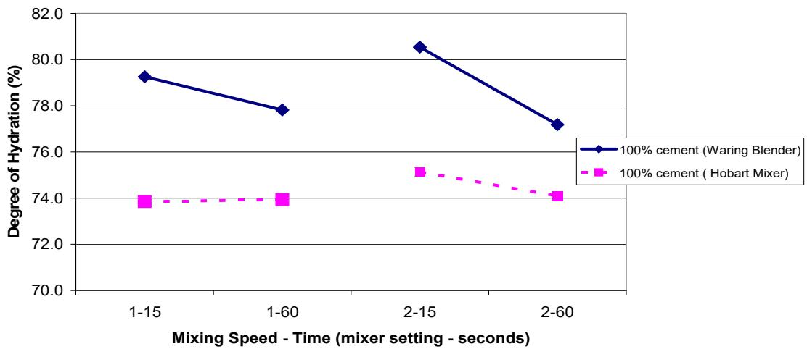
Comparison of degree of hydration for the high shear mixer and Hobart mixer [26]Mixing procedures also significantly influence performance; for instance, a two-step mixing procedure, where mortar is mixed initially before adding coarse aggregate, significantly increases the quantity of small air voids and produces a lower spacing factor compared to one-step mixing [11], while two-stage mixing processes can increase 28-day compressive strength by approximately 10 percent compared to conventional dry batch methods, potentially allowing for a reduction in total cementitious material content while maintaining target performance [26]. In pervious concrete, the use of angular/crushed aggregate provides better paste-to-aggregate bonding and generally yields superior freeze-thaw durability compared to rounded aggregates, while also producing higher tensile strength at similar densities [27]. For these mixtures, the binder-to-aggregate ratio typically ranges from 0.22 to 0.25, determining the thickness of the paste layer coating aggregate particles and the volume of paste filling void spaces [28], and utilizing a water-to-binder ratio between 0.27 and 0.30 is preferred to prevent excessive paste segregation at low ratios or reduced permeability from high ratios [28]. Additionally, the paste to combined aggregate voids volume (Vpaste/Vvoids) should range between 125 and 175 percent, with higher ratios used in cold weather to reduce cracking risk [29]. Regarding other additives, wet mixing procedures, where carbon fibers are added during the final stage along with the remaining water, help maintain fiber integrity and ensure uniform distribution in large-scale production, though longer mixing times can disrupt conductive networks by altering carbon fibers from flake forms into small circular bundles [13]. High dosages of SAPs can significantly impact the workability and fresh state properties of concrete, requiring careful proportioning to balance internal curing benefits with rheological requirements [10]. Finally, fresh concrete incorporating recycled aggregate tends to lose workability faster than conventional mixes, often resulting in a harsher consistency [21], and mixtures with recycled aggregate content exceeding 50 percent can lead to instability in fresh properties, increased bleeding, and reduced slump compared to control mixes [21]; meanwhile, field observations indicate that construction-related issues, such as retempering and higher water-cementitious material ratios than nominal design, play a larger role in scaling performance than the specific amount of slag in the mixture [30].
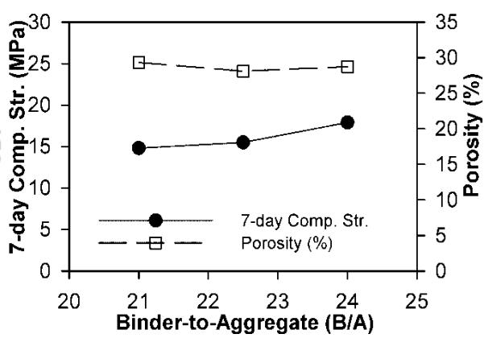
Binder-to-aggregate ratio versus workability, strength, and porosity [27]Internal Curing Mechanisms
Internal curing technology is defined as providing water to cementitious materials in young concrete from an internal water reservoir, such as a saturated lightweight aggregate, to improve hydration and replace moisture lost from self-desiccation or evaporation [31]. While external curing methods have a penetration depth of less than an inch, internal curing allows water to be evenly distributed throughout the concrete sample [31]. Specifically, internal curing using prewetted lightweight fine aggregate (LWFA) or superabsorbent polymers (SAPs) supplies water from within the concrete matrix to sustain hydration reactions, particularly for supplementary cementitious materials that require extended moisture availability [32]. This process, which uses saturated lightweight fine aggregate to promote more efficient hydration of supplementary cementitious materials like fly ash and slag cement by replenishing water depleted during the reaction [33], improves the degree of hydration in concrete, as estimated through image analysis of un-reacted cement particles [31]. In internally cured concrete mixtures, the absorbed water within lightweight aggregates or SAPs is excluded from the water-to-cementitious materials (w/cm) ratio calculation because it does not contribute to capillary porosity development; this internal curing water is typically estimated at 7 lbs per 100 lbs of cementitious materials to match the volume of chemical shrinkage [32]. Furthermore, internal curing using saturated lightweight fine aggregate (LWFA) can replace approximately 25% of the mass of fine aggregate to provide about 7% internal curing water by mass of cementitious materials, which improves the degree of hydration in concrete mixtures containing supplementary cementitious materials [31].
 Conceptual illustration of volumetric components in a plain and internally cured mixture [32]
Conceptual illustration of volumetric components in a plain and internally cured mixture [32]
The application of this technology substantially reduces transport properties such as diffusion and sorptivity, which increases the service life of concrete structures [33]. This internal water supply also reduces autogenous shrinkage and plastic shrinkage cracking while improving long-term durability by lowering fluid transport properties [32]. Enhanced hydration from internal curing allows for small but significant reductions in cement content while maintaining performance, thereby reducing the carbon footprint of each cubic yard of concrete [33]. Internally cured concrete containing SCMs exhibits reduced unit weight, elastic modulus, and coefficient of thermal expansion compared to conventional mixes, while maintaining similar compressive strength; these property modifications lead to tighter crack openings in continuously reinforced concrete pavements and reduced punch-out failures [32]. Additionally, internal curing with prewetted lightweight fine aggregate (LWFA) is superior to coarse LWA for freeze-thaw resistance due to improved particle spacing at lower aggregate substitution levels, as this finer distribution allows capillary stresses to draw water out more rapidly and uniformly throughout the paste matrix [32].
Reactive Powder Concrete Strengths
Reactive Powder Concretes (RPC) utilizing SCMs can achieve compression strengths exceeding 29,000 psi and flexural strengths over 5,800 psi without requiring passive reinforcement [4]. Roller-compacted concrete (RCC) utilizes a dense-graded aggregate mix with lower binder and water contents compared to conventional pavement concrete, resulting in reduced paste volume while maintaining high strength through vibratory roller compaction [8]. For heating applications, electrically conductive concrete (ECON) requires the integration of conductive fibers, such as carbon or steel, to generate sufficient electrical resistance; carbon fibers are preferred over steel due to their noncorrosive nature in salt-exposed environments, though they require careful mixing to avoid degradation that increases electrical resistance [13]. Fiber-reinforced concrete (FRC) overlays utilizing synthetic macrofibers at dosages between 0.2% and 1.0% by volume provide residual strength that enhances fatigue life, with fibers bridging developing cracks to carry tensile stresses and absorb energy [24]. The addition of fibers to concrete overlays can enhance aggregate interlock across joints in thin sections where dowel bars are absent, thereby improving load transfer efficiency and reducing pavement roughness [24], although joint-free fiber-reinforced concrete overlays placed without transverse joints have demonstrated poor long-term performance due to crack widths exceeding predictions, suggesting that fibers may not be effective across dominant cracks in such configurations [24]. exposed aggregate concrete pavement is perceived to possess superior tonal qualities compared to conventionally textured surfaces, particularly when contrasted with transversely tined pavements [34].
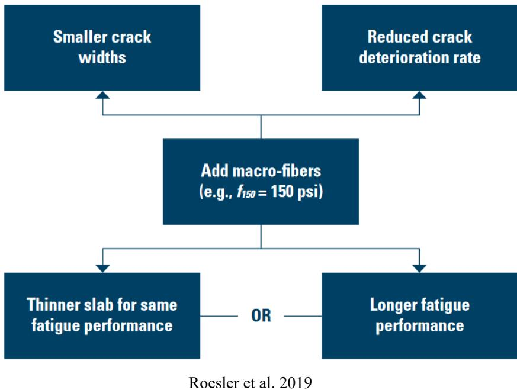
Design benefits of using FRC [24]Pervious concrete mixtures typically utilize a sand-to-total aggregate ratio between 5% and 10%, with void ratios ranging from 14% to 31% and permeability values spanning from 36 in./hour to 864 in./hour [34]. Pervious concrete pavement concrete (PCPC) mixtures are typically designed to yield approximately 17.5% voids, balancing the need for permeability with structural workability and strength requirements [27], though pervious concrete pavements constructed with void contents between 25% and 30% have been reported to maintain structural soundness under high-volume traffic [34]. In PCPC, supplementary cementitious materials have been investigated in binary and ternary combinations up to 50% replacement for portland cement, a level that often results in improved properties compared to straight cement mixtures [27]. To achieve adequate freeze-thaw durability, cementitious systems for pervious pavements often require at least 10% to 12% polymer cement [34], and PCPC mixtures can be designed to achieve excellent freeze-thaw durability while maintaining high permeability, making them suitable for structural overlays that also provide environmental benefits such as noise reduction and skid resistance [27]. Regarding filtration, in pervious concrete systems, fine particles passing the No. 200 sieve (75 µm) are often carried through pore spaces rather than clogging the matrix, whereas sand sediments can cause significant permeability decreases of up to 90% depending on initial porosity [27]. Furthermore, in pervious concrete systems, limestone powder replacement of cement achieves naphthalene attenuation rates comparable to Class F fly ash at approximately 30% removal, whereas slag cement exhibits negligible pollutant capture (0.5%) due to its high hydraulic conductivity facilitating rapid water channeling [28]. The recommended thickness for a pervious concrete layer in highway applications is 40 mm (1.6 in.), whereas urban settings require a thicker layer of 70 mm (2.75 in.) [34].
 Water permeating pervious concrete [34]
Water permeating pervious concrete [34]
Performance Metrics and Field Analysis Methods
Portable X-ray fluorescence (XRF) devices can estimate the proportions of as-delivered concrete mixtures by analyzing elemental mass percentages and converting them to oxides using a least-differences solver approach, though accuracy is significantly reduced when water presence or heterogeneous mortar samples are included in the calculation [35]. In paste mixtures, portable XRF analysis provides an adequate correlation between real and calculated SCM dosages for both binary and ternary combinations when using a solver function based on reported oxides, whereas including sand content in mortar calculations consistently yields low predicted percentages [35]. The analytical accuracy of field XRF devices is heavily influenced by sample heterogeneity and moisture content, as the balance of undetected elements in paste samples roughly corresponds to water content while mortar analysis introduces considerable error due to insufficient beam penetration depth [35]. For detailed material characterization, petrographic analysis using thin sections polished to a thickness of 25 microns or less allows for the identification and estimation of supplementary cementitious materials through phase identification, residual material quantification, and spatial relationship mapping [36].
 The relationship between cumulative error and calculated SCM content [35]
The relationship between cumulative error and calculated SCM content [35]
Thermal and hydration characteristics are also critical; differential scanning calorimetry (DSC) testing utilizes heat-driven moisture removal and characteristic thermal peaks to precisely quantify gypsum content within cementitious systems [18], while low-temperature differential scanning calorimetry can quantify calcium oxychloride formation by measuring heat flow after a one-hour room temperature hold following the combination of cementitious powder and salt solution [29]. Simple calorimetry tests using devices such as Dewar flasks, coffee cups, or sprayed-foam baskets can provide critical feedback on SCM compatibility and hydration effects within 12 to 48 hours, though their accuracy is rarely reported [17]. Specifically, the coffee cup test assesses rapid heat generation by vigorously shaking a 500g cementitious mixture with water in a Nalgene bottle for 20 seconds before transferring it to an insulated Styrofoam enclosure [18]. Calorimetry curves can predict initial set times using the 20 percent fraction method, which correlates well with ultrasonic pulse velocity (UPV) measurements [29]. Ultrasonic pulse velocity testing can determine the set time of concrete containing SCMs, with initial setting occurring between 5 and 8 hours [37], and UPV testing can also be utilized to monitor the setting behavior of concrete containing blast-furnace slag by measuring P-wave propagation through early-age cement pastes and mortars [38].
 Calorimetry test device for measuring the heat of hydration of concrete [38]
Calorimetry test device for measuring the heat of hydration of concrete [38]
Flow properties and fresh-state characteristics are measured through various parameters; the T-loss parameter measures the time at which concrete begins to exit a vibrating slope apparatus chute, providing data on flow properties that is often smoothed out by fitted data curves [16], while the T-20% loss parameter defines the time required for 20% of concrete to flow out of a chute, allowing calculation of average flow rate based on linear flow assumptions up to that point [16]. For semi-flowable self-consolidating concrete, the green strength is optimized at a compressive load capacity between 1.3 and 2.5 kPa when the flow diameter ranges from 41% to 47% [12]. The unit weight of fresh pervious concrete containing SCMs varies by material type, ranging from 115.9 lb/yd³ for 15% slag replacement to 119.6 lb/yd³ for 15% fly ash replacement [28]. In pervious concrete, fly ash and limestone powder achieve higher compressive strength (up to 2,285 psi) compared to slag replacement (1,858 psi), with strength generally increasing as unit weight increases and total porosity decreases [28]. Permeability coefficients in pervious concrete containing SCMs range from 340 in./hr for pure Portland cement to 642 in./hr for mixtures with 15% slag replacement, correlating inversely with unit weight and directly with total porosity [28]. Additionally, the 28-day compressive strength of pervious concrete generally ranges from 800 psi to 4,000 psi [34].
 Unit weight, strength, and permeability of pervious concrete mixtures [28]
Unit weight, strength, and permeability of pervious concrete mixtures [28]
Durability and long-term performance are heavily influenced by air-void structure and chemical resistance. Permeability serves as an effective measure of concrete durability and provides significant insight into the long-term performance of concrete pavements [39]. The Air-Void Analyzer (AVA) provides critical fresh-state measurements of air void spacing factor and specific surface, which are more indicative of freeze-thaw durability than total air content alone [11]. Variations in AVA test results are influenced by equipment-specific factors such as the viscosity of the blue fluid, stirring energy (rpm), and drilling model [11]. The Super Air Meter (SAM) is also utilized as an innovative test method to evaluate air structure parameters for quality control plans in concrete mixtures [29]. To ensure freeze-thaw durability, standards recommend an air content of at least 6% measured by ASTM C231, with a spacing factor limit of 0.28 mm when using the Air-Void Analyzer or 0.22 mm when using RapidAir equipment [15]; meanwhile, Kansas DOT has established a minimum air content requirement of 5% based on a maximum AVA spacing factor limit of 0.25 mm (0.01 in.) to ensure adequate freeze-thaw resistance [11]. Secondary ettringite formation can infill fine air void spaces in hardened concrete, reducing entrained air content from 3.5% to 1.9% and increasing the spacing factor from 0.007 inches to 0.012 inches, thereby compromising freeze-thaw resistance [36].
 Air-void analyzer [11]
Air-void analyzer [11]
Chemical resistance to deicers is a major concern; the presence of deicing salts increases solution viscosity, surface tension, and specific gravity while decreasing water activity, which reduces the rate and total amount of absorption in concrete proportional to the square root of the ratio of surface tension and viscosity [36]. The efficiency factors for SCMs regarding carbonation and chloride penetration are quantified using K-values [6].
Pavement design and specialized concrete types require precise data. The Mechanistic-Empirical Pavement Design Guide (MEPDG) requires specific material properties characterizing concrete thermal behavior, dimension stability, and strength for pavement distress computations, necessitating reliable data inputs that are often unavailable for local mixtures [14]. Well-performing concrete pavements with a Pavement Condition Index (PCI) rating of 1 or 2 typically exhibit an average water-to-cement ratio of 0.49, whereas poorly performing sections rated 5 or 6 show a higher ratio of 0.55 [39]. Concrete containing SCMs can exhibit a coefficient of thermal expansion (CTE) as low as 1.044 × 10⁻⁵ ε/°C when measured at 56 days [37]. The second-generation curvature index (2GCI) approach utilizes curve-fitting methods based on a second-order polynomial to characterize the curled or warped shape of individual slabs from continuous longitudinal profile measurements [24]. Printed concrete exhibits anisotropic behavior where compressive strength loaded parallel to filaments is much lower than when loaded perpendicular, likely due to filament buckling under compression; conversely, flexural strength differences between loading directions are minimal [7]. ECON mixtures can be proportioned to achieve specific electrical resistance values by adjusting carbon fiber dosage, with studies correlating fiber content between 0.10% and 1.25% by volume to target performance levels; however, plant-produced ECON requires consistent production methods across different facilities to maintain design expectations for electrode sizing [13]. Finally, neutron radiography has been used to visualize and quantify water penetration through cracks in self-healing concrete containing SAPs, providing direct evidence of the polymer’s role in crack sealing [10], and the cementing efficiency factor (CEF) quantifies binder performance as the ratio of compressive strength divided by binder content multiplied by 100 at a specific curing age, demonstrating a linear relationship between compaction quality and strength gain [8]. Field monitoring during construction requires tracking slump loss, setting time, air content, and utilizing an air void analyzer (AVA) alongside HIPERPAV™ to ensure compatibility with pre-construction guidelines [18].
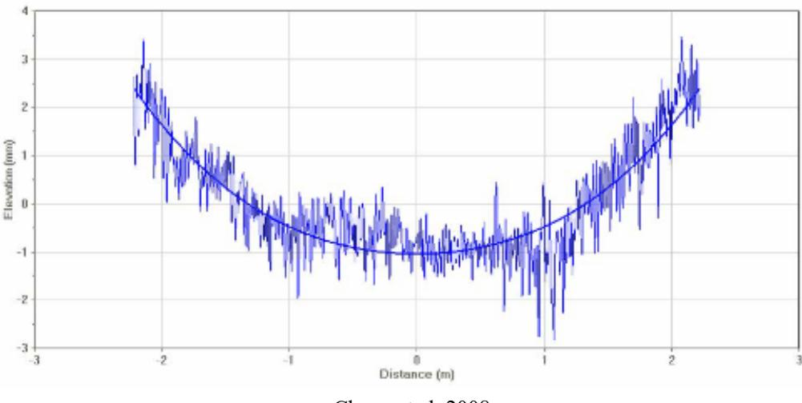
Fitted profile to characterize concrete slab curling/warping [24]The detection limits for elements lighter than magnesium are unreliable in certain portable XRF devices, meaning moisture content can significantly affect analytical accuracy. [35]
Portable XRF analysis requires a homogeneous and flat surface for accurate quantitative results, but concrete heterogeneity at scales from millimeters to nanometers makes representative sampling challenging. [35]
 Handheld XRF device [35]
Handheld XRF device [35]
Separately, Performance-Enriched Mixtures (PEM) specifications allow for reduced cementitious content through optimized aggregate gradations, with states like Colorado and Idaho implementing these changes to lower carbon footprints while maintaining durability [23].
Nondestructive Monitoring Techniques
One-sided ultrasonic measurements provide a viable method for monitoring the setting behavior of cementitious materials without requiring access to both sides of the specimen. [40]
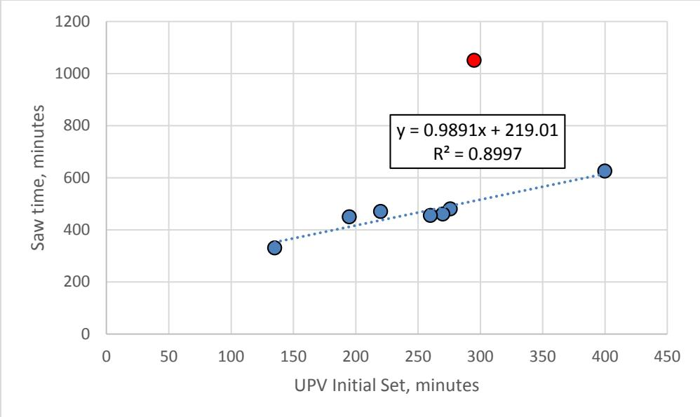
Comparison of setting and sawing times [40]Ultrasonic wave propagation monitoring can effectively describe the stiffening process of self-consolidating concrete during early ages. [40]
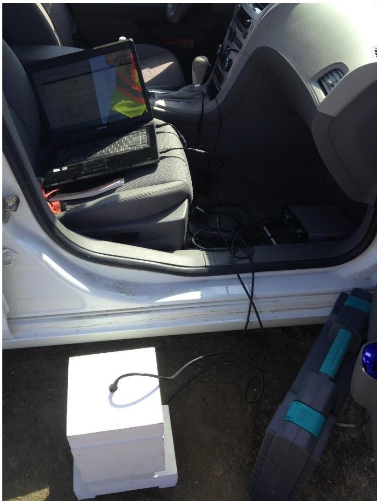
Test setup with sample and transducers in a wooden frame for stability [40]Slag Replacement Levels and Grades
Slag replacement levels in concrete mix designs can vary significantly from approximately 20% to more than 60%, with higher ranges commonly utilized when specific durability requirements such as ASR or sulfate resistance are necessary [1].
Under the ASTM specification for slag (C 989), the material is categorized into three grades based on compressive strength activity index—Grade 80, Grade 100, and Grade 120—where higher grades indicate more rapid strength gain [1].
The pozzolanic activity of fly ash is primarily dependent upon its fineness, the amounts of silica and alumina present, and the availability of moisture and free lime, while factors such as density, carbon content, curing temperature, and material age significantly influence the rate at which the reaction proceeds [6].
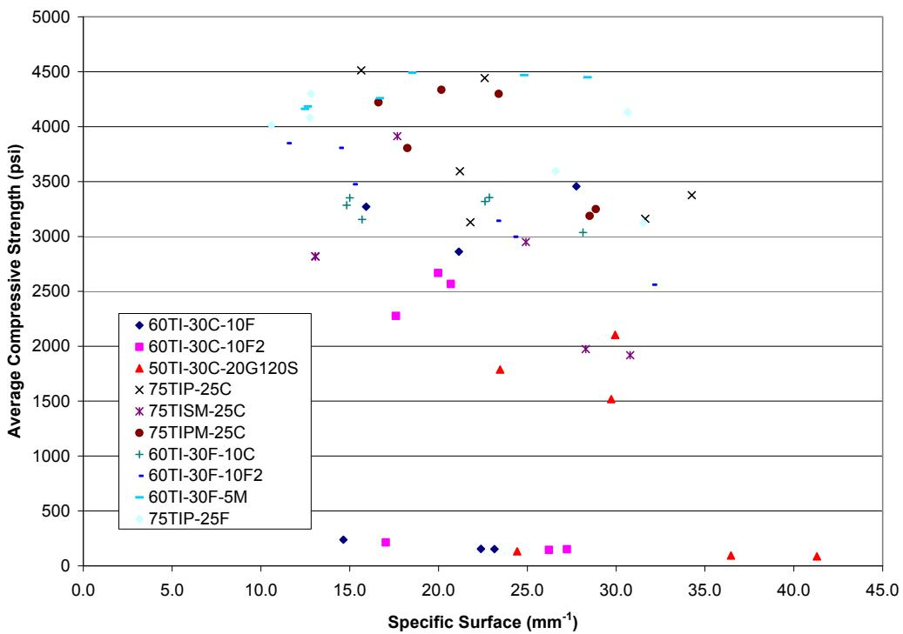
Effect of specific surface on the average compressive strength for all mixtures [6]Class F fly ash is characterized by a silicate glass phase that is relatively insoluble in hydrochloric acid, with solubility typically less than 15%, whereas Class C fly ash contains a high-calcium glass phase and cementitious minerals that make it approximately 70% soluble in the same acid [1].
 X-ray diffractograms of Class C fly ash and the acid-insoluble residue from the fly ash (note the change in the glass type; the acid-insoluble portion of the fly ash is the pozzolanic fraction of the ash) [1]
X-ray diffractograms of Class C fly ash and the acid-insoluble residue from the fly ash (note the change in the glass type; the acid-insoluble portion of the fly ash is the pozzolanic fraction of the ash) [1]
Class F fly ashes typically exhibit a larger glass halo in X-ray diffractograms compared to Class C fly ashes, indicating a higher amorphous glass content that suggests greater potential pozzolanic capabilities [6].
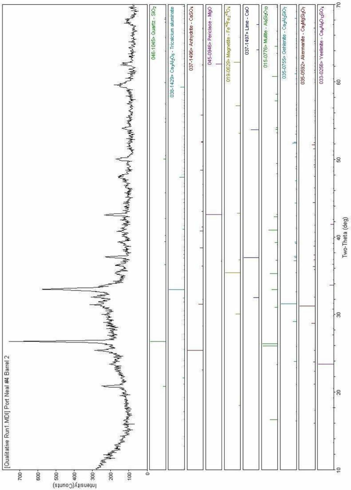
XRD results for Class C fly ash [6]Thermal Performance and Heat Evolution
Specifically, high-calcium Class C fly ash can react rapidly with water to release excessive heat similar to normal OPC hydration, whereas low-calcium fly ash reduces the overall heat of hydration [17].
 b. Effect of class C fly ash on heat generation (adapted from Nocuñ-Wczelik 2001) [17]
b. Effect of class C fly ash on heat generation (adapted from Nocuñ-Wczelik 2001) [17]
Metakaolin concrete can achieve heat evolution curves closely matching those of plain Portland cement when metakaolin is incorporated at replacement rates below 10% by weight [6].
In ternary cements, increasing slag replacement causes the datum temperature of the concrete to increase linearly, while the activation energy increases exponentially [2].
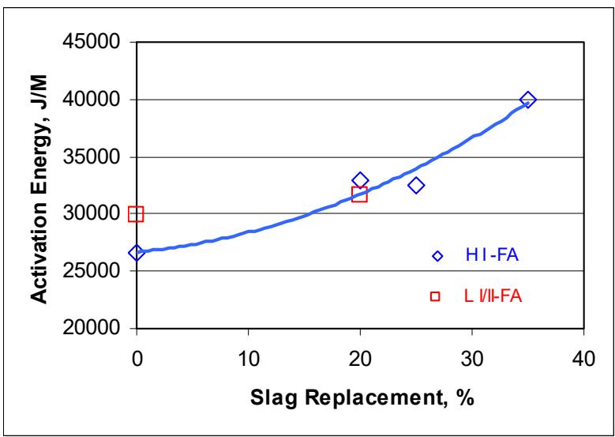
Effect of slag replacements on datum temperature and activation energy [2]Slag-blended cement exhibits two distinct heat generation peaks: the first corresponds to cement hydration and the second is caused by the slag reaction [17].
 Effect of slag on hydration (adapted from Kishi and Maekawa 1994) [17]
Effect of slag on hydration (adapted from Kishi and Maekawa 1994) [17]
For context, the average length change of a 20 ft long concrete slab due to ambient temperature effects is approximately 0.025 inches [41].
Strength Development Characteristics
Different supplementary materials impact these properties uniquely; while fly ash typically reduces early-age strength in exchange for higher ultimate strength, concrete containing silica fume develops significantly increased ultimate strength at a rate similar to plain portland cement [25].
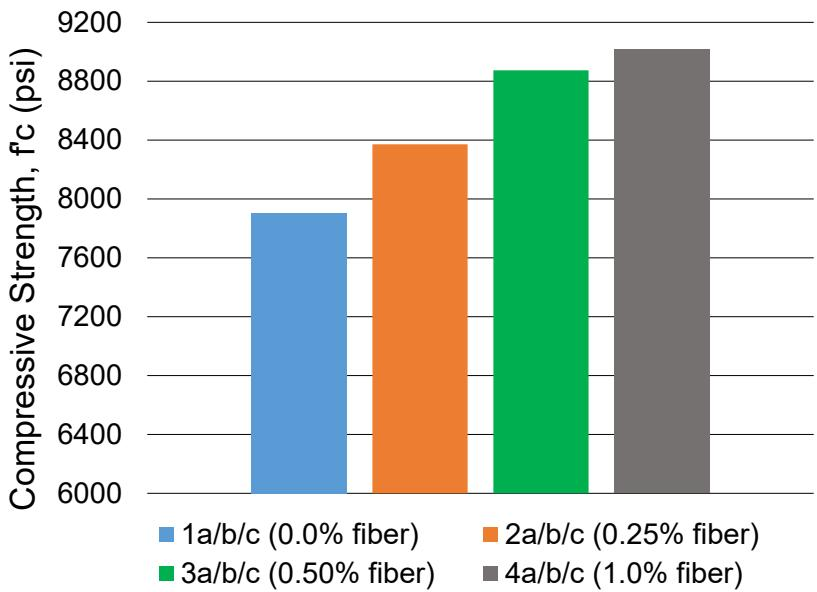
28-day compressive strength of FRC mixes [25]Compressive Strength Development
Specifically, Class C fly ash typically exhibits little effect on early compressive strength gain but provides limited ability to mitigate alkali-silica reaction compared to Class F fly ash, which significantly reduces early strength gain while enhancing sulfate and ASR resistance [1].
An optimum replacement rate for metakaolin is approximately 20% to achieve maximum long-term strength gain in concrete mixtures [6].
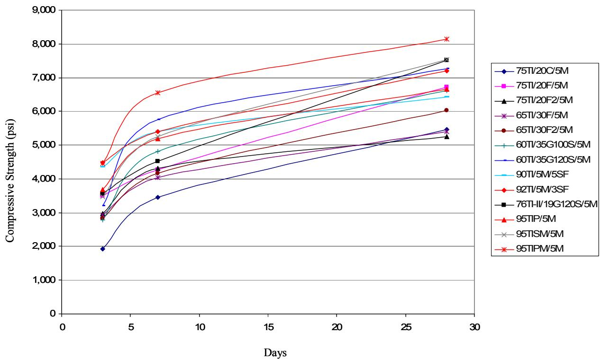
Strength gain for mortar mixtures containing metakaolin [6]Durability and Microstructural Refinement
Fly ash replacement generally reduces alkali-silica reaction (ASR) in concrete due to its low soluble alkali content, slow alkali releasing rate, and the reduced permeability resulting from pozzolanic activity [2].
To mitigate such issues, the application of specific accelerated curing protocols is primarily intended to increase the density of the concrete matrix by promoting more complete reaction of supplementary cementitious materials, thereby significantly lowering the material’s permeability [42].
The pozzolanic reaction refines concrete pores, which increases water contact angles and enhances hydrophobicity in mixtures containing Class C fly ash compared to plain Portland cement [43].
In concrete exposed to chloride ions, un-hydrated fly ash particles remain visible with clean surfaces when calcium chloride intrusion is limited by sealers, whereas untreated specimens show rare un-hydrated particles due to accelerated hydration [43].
Material Standards and Classification
Regarding material standards, ASTM C989 classifies slag into three grades (80, 100, and 120) based on compressive strength activity index tests, where higher grades indicate more rapid strength gain, whereas CSA specifications recognize only a single grade of slag (Type S), which can complicate international material comparisons [1].
See also
- Cementitious Materials & Chemistry
- Blended Cement
- Fly Ash
- Ground Granulated Blast-Furnace Slag
- Pozzolanic Reaction
- Silica Fume
- Ternary Mixture
References
- S. Schlorholtz, "Development of Performance Properties of Ternary Mixes: Scoping Study (Phase 1)," Center for Portland Cement Concrete Pavement Technology, Iowa State University, Ames, IA, Rep. DTFH61-01-X-00042 (Project 13), 2004. [Online]. Available: https://www.cptechcenter.org/wp-content/uploads/2018/03/ternary_mixes.pdf
- K. Wang and Z. Ge, "Evaluating Properties of Blended Cements for Concrete Pavements," Department of Civil, Construction and Environmental Engineering, Iowa State University, Ames, IA, 2003. [Online]. Available: https://www.intrans.iastate.edu/wp-content/uploads/2018/03/blended_cements-1.pdf
- H. Ceylan, S. Yang, K. Gopalakrishnan, S. Kim, P. Taylor, and A. Alhasan, "Impact of Curling and Warping on Concrete Pavement," Institute for Transportation, Ames, IA, Rep. TR-668, 2016. [Online]. Available: https://www.intrans.iastate.edu/wp-content/uploads/2018/03/curling_and_warping_impact_on_concrete_pvmt_w_cvr.pdf
- D. Harrington, R. Rasmussen, D. Merritt, T. Cackler, and P. Taylor, "Long-Term Plan for Concrete Pavement Research and Technology—The Concrete Pavement Road Map (Second Generation): Volume II, Tracks (FHWA-HRT-11-070)," National Center for Concrete Pavement Technology, Iowa State University, Ames, IA, 2012. [Online]. Available: https://www.fhwa.dot.gov/publications/research/infrastructure/pavements/pccp/11070/11070.pdf
- J. Grove, F. Bektas, and H. Gieselman, "Southeast Michigan Local Road Concrete Pavement Durability Study," National Concrete Pavement Technology Center, Ames, IA, 2006. [Online]. Available: https://www.cptechcenter.org/wp-content/uploads/2018/03/mi_pavement_durability.pdf
- P. Tikalsky, V. Schaefer, K. Wang, B. Scheetz, T. Rupnow, A. St. Clair, M. Siddiqi, and S. Marquez, "Development of Performance Properties of Ternary Mixes, Phase 1," Center for Transportation Research and Education, Ames, IA, Rep. TPF-5(117), 2007. [Online]. Available: https://www.intrans.iastate.edu/research/completed/development-of-performance-properties-of-ternary-mixes-phase-1/
- K. Wang, K. Wi, S. Laflamme, S. Sritharan, P. Taylor, and H. Qin, "Feasibility Study of 3D Printing of Concrete for Transportation Infrastructure," Institute for Transportation, Iowa State University, Ames, IA, Rep. TR-756, 2020. [Online]. Available: https://intrans.iastate.edu/app/uploads/2020/10/concrete_transportation_infrastructure_3D_printing_feasibility_w_cvr.pdf
- C. V. Hazaree, H. Ceylan, P. Taylor, K. Gopalakrishnan, K. Wang, and F. Bektas, "Use of Chemical Admixtures in Roller-Compacted Concrete for Pavements," National Concrete Pavement Technology Center, Ames, IA, 2013. [Online]. Available: https://www.intrans.iastate.edu/wp-content/uploads/2018/03/rcc_admixture_w_cvr1.pdf
- P. Taylor, F. Bektas, E. Yurdakul, and H. Ceylan, "Optimizing Cementitious Content in Concrete Mixtures for Required Performance," National Concrete Pavement Technology Center, Ames, IA, 2012. [Online]. Available: https://www.intrans.iastate.edu/wp-content/uploads/2018/03/taylor_ocm_w_cvr2.pdf
- B. Zhou, P. Taylor, and K. Wang, "Superabsorbent Polymer in Concrete to Improve Durability," National Concrete Pavement Technology Center, Iowa State University, Ames, IA, Rep. TR-793, 2025. [Online]. Available: https://www.intrans.iastate.edu/wp-content/uploads/2025/04/superabsorbent_polymer_in_concrete_w_cvr.pdf
- K. Wang, M. Mohamed-Metwally, F. Bektas, and J. Grove, "Improving Variability and Precision of Air-Void Analyzer (AVA) Test Results ..., Phase I," Center for Transportation Research and Education, Ames, IA, 2008. [Online]. Available: https://www.cptechcenter.org/wp-content/uploads/2018/03/ava-1.pdf
- K. Wang, S. P. Shah, J. Grove, P. Taylor, P. Wiegand, B. Steffes, G. Lomboy, Z. Quanji, L. Gang, and N. Tregger, "Self-Consolidating Concrete—Applications for Slip-Form Paving: Phase II," National Concrete Pavement Technology Center, Ames, IA, Rep. TPF-5(098), 2011. [Online]. Available: https://www.intrans.iastate.edu/wp-content/uploads/2018/03/SCC_Phase_2_final_report-edited_wcover.pdf
- M. L. Rahman, H. Ceylan, S. Kim, P. C. Taylor, and D. King, "Advancing Electrically Heated Pavements for Sustainable Winter Maintenance," PROSPER and National Concrete Pavement Technology Center, Iowa State University, Ames, IA, Rep. HR-3049, 2024. [Online]. Available: https://www.intrans.iastate.edu/wp-content/uploads/2025/03/electrically_heated_pavements_for_sustainable_winter_maintenance_w_cvr.pdf
- K. Wang, J. Hu, and Z. Ge, "Task 4: Testing Iowa PCC Mixtures for the AASHTO Mechanistic-Empirical Pavement Design Procedure," Center for Transportation Research and Education, Ames, IA, Rep. CTRE 06-270, 2008. [Online]. Available: https://www.intrans.iastate.edu/research/completed/testing-iowa-portland-cement-concrete-mixtures-for-the-mechanistic-empirical-pavement-design-guide/
- K. Wang, G. Lomboy, and R. Steffes, "Investigation into Freezing-Thawing Durability of Low-Permeability Concrete with and without Air Entraining Agent," National Concrete Pavement Technology Center, Ames, IA, 2009. [Online]. Available: https://www.intrans.iastate.edu/wp-content/uploads/2018/03/low-permeability-concrete.pdf
- S. Schlorholtz, K. Wang, J. Hu, and S. Zhang, "Materials and Mix Optimization Procedures for PCC Pavements," CTRE, Iowa State University, Ames, IA, Rep. TR-484, 2006. [Online]. Available: https://www.intrans.iastate.edu/wp-content/uploads/2018/03/mco-final.pdf
- K. Wang, Z. Ge, J. Grove, J. M. Ruiz, and R. Rasmussen, "Developing a Simple and Rapid Test for Monitoring the Heat Evolution of Concrete Mixtures (Phase 3)," CTRE, Iowa State University, Ames, IA, Rep. FHWA Project 17 (Phase I), 2006. [Online]. Available: https://www.intrans.iastate.edu/wp-content/uploads/2018/03/CalorimeterReportPhaseIII.pdf
- J. Grove, G. Fick, T. Rupnow, and F. Bektas, "Material and Construction Optimization for Prevention of Premature Pavement Distress in PCC Pavements," National Concrete Pavement Technology Center, Ames, IA, Rep. TPF-5(066), 2008. [Online]. Available: https://www.intrans.iastate.edu/wp-content/uploads/2018/03/mco-final.pdf
- K. Wang, Z. Ge, J. Grove, J. M. Ruiz, R. Rasmussen, and T. Ferragut, "Simple and Rapid Test for Monitoring the Heat Evolution of Concrete Mixtures, Phase 2," Center for Transportation Research and Education, Ames, IA, 2007. [Online]. Available: https://www.intrans.iastate.edu/wp-content/uploads/2018/03/calorimeter.pdf
- K. Wang, J. M. Ruiz, J. Hu, Z. Ge, Q. Xu, J. Grove, and R. Rasmussen, "Simple and Rapid Test for Monitoring the Heat Evolution ..., Phase III," National Concrete Pavement Technology Center, Ames, IA, 2008. [Online]. Available: https://www.intrans.iastate.edu/wp-content/uploads/2018/03/CalorimeterReportPhaseIII.pdf
- S. Garber, R. Rasmussen, T. Cackler, P. Taylor, D. Harrington, G. Fick, M. Snyder, T. Van Dam, and C. Lobo, "A Technology Deployment Plan for the Use of Recycled Concrete Aggregates in Concrete Paving Mixtures," National Concrete Pavement Technology Center, Ames, IA, 2011. [Online]. Available: https://www.intrans.iastate.edu/wp-content/uploads/2018/03/RCA-Draft-Report_final-ssc.pdf
- P. Tikalsky, P. Taylor, S. Hanson, and P. Ghosh, "Development of Performance Properties of Ternary Mixtures: Laboratory Study on Concrete," National Concrete Pavement Technology Center, Ames, IA, Rep. TPF-5(117), 2011. [Online]. Available: https://www.intrans.iastate.edu/research/completed/development-of-performance-properties-of-ternary-mixtures-laboratory-study-on-concrete/
- J. Gross, J. Weiss, T. Ley, P. Taylor, N. Weitzel, T. Van Dam, G. Smith, and C. Jones, "Performance-Engineered Concrete Paving Mixtures," National Concrete Pavement Technology Center, Iowa State University, Ames, IA, Rep. TPF-5(368), 2022. [Online]. Available: https://www.intrans.iastate.edu/wp-content/uploads/2023/04/performance-engineered_concrete_paving_mixtures_w_cvr.pdf
- D. King, B. Yang, P. Taylor, and H. Ceylan, "Field Performance of Fiber-Reinforced Concrete Overlays," Institute for Transportation, Iowa State University, Ames, IA, Rep. TR-816, 2025. [Online]. Available: https://www.intrans.iastate.edu/wp-content/uploads/2025/05/field_performance_of_frc_overlays_w_cvr.pdf
- B. Shafei, P. Taylor, B. Phares, and M. Kazemian, "Fiber-Reinforced Concrete for Bridge Decks," Bridge Engineering Center, Iowa State University, Ames, IA, Rep. TR-767, 2021. [Online]. Available: https://www.intrans.iastate.edu/wp-content/uploads/2021/12/fiber-reinforced_concrete_in_bridge_decks_w_cvr.pdf
- T. D. Rupnow, V. R. Schaefer, K. Wang, and B. L. Hermanson, "Improving PCC Mix Consistency and Production Rate through Two-Stage Mixing," Center for Transportation Research and Education, Ames, IA, Rep. TR-505, 2007. [Online]. Available: https://www.intrans.iastate.edu/wp-content/uploads/2018/03/two-stage-mix-1.pdf
- V. R. Schaefer and J. T. Kevern, "An Integrated Study of Pervious Concrete Mixture Design for Wearing Course Applications," National Concrete Pavement Technology Center, Ames, IA, 2011. [Online]. Available: https://www.intrans.iastate.edu/wp-content/uploads/2018/03/pervious_overlay_report_w_cvr.pdf
- S. K. Ong, K. Wang, Y. Ling, and G. Shi, "Pervious Concrete Physical Characteristics and Effectiveness in Stormwater Pollution Reduction," Institute for Transportation, Ames, IA, Rep. DTRT13-G-UTC37, 2016. [Online]. Available: https://www.intrans.iastate.edu/wp-content/uploads/2018/03/pervious_concrete_in_stormwater_pollution_reduction_w_cvr.pdf
- X. Wang, P. Taylor, and D. King, "Evaluation of Modified Concrete Mixture Proportions for the City of West Des Moines," National Concrete Pavement Technology Center, Ames, IA, 2016. [Online]. Available: https://www.intrans.iastate.edu/wp-content/uploads/2018/03/WDM_modified_concrete_mixture_proportions_w_cvr.pdf
- S. Schlorholtz and R. D. Hooton, "Deicer Scaling Resistance ... Containing Slag Cement, Phase 1: Site Selection and Analysis of Field Cores," National Concrete Pavement Technology Center, Ames, IA, Rep. TPF-5(100), 2008. [Online]. Available: https://www.cptechcenter.org/wp-content/uploads/2018/03/schlorholtz_deicing_phase1.pdf
- A. Daghighi, P. Taylor, H. Ceylan, and Y. Zhang, "Impacts of Internally Cured Concrete Paving on Contraction Joint Spacing Phase II," National Concrete Pavement Technology Center, Iowa State University, Ames, IA, Rep. TR-746, 2021. [Online]. Available: https://www.cptechcenter.org/wp-content/uploads/2021/05/IC_concrete_paving_impacts_phase_II_field_impl_w_cvr.pdf
- W. J. Weiss and L. Montanari, "Guide Specification for Internally Curing Concrete," National Concrete Pavement Technology Center, Ames, IA, Rep. TPF-5(286), 2017. [Online]. Available: https://www.intrans.iastate.edu/wp-content/uploads/2018/09/IC_guide_spec_w_cvr.pdf
- P. Taylor, T. Hosteng, X. Wang, and B. Phares, "Evaluation and Testing of a Lightweight Fine Aggregate Concrete Bridge Deck in Buchanan County, Iowa," National Concrete Pavement Technology Center and Bridge Engineering Center, Ames, IA, Rep. TR-648, 2016. [Online]. Available: https://www.intrans.iastate.edu/wp-content/uploads/2018/03/Buchanan_LWFA_bridge_deck_w_cvr.pdf
- E. T. Cackler, T. Ferragut, and D. S. Harrington, "Evaluation of U.S. and European Concrete Pavement Noise Reduction Methods," National Concrete Pavement Technology Center, Iowa State University, Ames, IA, Rep. FHWA Project 15 (DTFH61-01-X-00042), 2006. [Online]. Available: https://www.cptechcenter.org/wp-content/uploads/2018/03/surface_characteristics_i.pdf
- P. C. Taylor, E. Yurdakul, and H. Ceylan, "Concrete Pavement MDA: Application of a Portable X-Ray Fluorescence Technique to Assess Concrete Mix Proportions," National Concrete Pavement Technology Center, Ames, IA, Rep. TPF-5(205), 2012. [Online]. Available: https://www.intrans.iastate.edu/research/completed/concrete-pavement-mixture-design-and-analysis/
- P. Taylor, L. Sutter, and J. Weiss, "Investigation of Deterioration of Joints in Concrete Pavements," National Concrete Pavement Technology Center, Ames, IA, Rep. TPF-5(224), 2012. [Online]. Available: https://www.intrans.iastate.edu/wp-content/uploads/2018/03/joint_deterioration_penetrating_sealers_field_study_w_cvr.pdf
- H. Ceylan, D. J. Turner, R. O. Rasmussen, G. K. Chang, J. Grove, S. Kim, and C. S. Reddy, "Impact of Curling, Warping, and Other Early-Age Behavior on Concrete Pavement Smoothness: EFD Study (Phase I)," Center for Transportation Research and Education, Iowa State University, Ames, IA, Rep. DTFH61-01-X-00042 (Project 16), 2005. [Online]. Available: https://www.intrans.iastate.edu/wp-content/uploads/2018/03/curling_warping-2.pdf
- P. Taylor and X. Wang, "Comparison of Setting Time Measured Using Ultrasonic Wave Propagation with Saw-Cutting Times on Pavements," National Concrete Pavement Technology Center, Ames, IA, Rep. TR-675, 2015. [Online]. Available: https://www.intrans.iastate.edu/wp-content/uploads/2018/03/PCC_setting_time_and_joint_sawing_w_cvr.pdf
- J. K. Cable and H. Ceylan, "Defining the Attributes of Good In-Service Portland Cement Concrete Pavements," Center for Portland Cement Concrete Pavement Technology, Iowa State University, Ames, IA, Rep. DTFH61-01-X-00042 (Project 9), 2004. [Online]. Available: https://www.intrans.iastate.edu/wp-content/uploads/2018/03/pavement_attributes.pdf
- P. Taylor and X. Wang, "Concrete Pavement MDA: Comparison of Setting Time Measured Using Ultrasonic Wave Propagation With Saw-Cutting Times on Pavements in Iowa," National Concrete Pavement Technology Center, Ames, IA, Rep. TPF-5(205), 2014. [Online]. Available: https://www.intrans.iastate.edu/research/completed/comparison-of-setting-time-measured-using-ultrasonic-wave-propagation-with-saw-cutting-times-on-pavements-in-iowa/
- K. Wang, J. Hu, F. Bektas, P. Taylor, and H. Ceylan, "Crack Development in Ternary Mix Concrete Utilizing Various Saw Depths," National Concrete Pavement Technology Center, Ames, IA, Rep. TR-587, 2009. [Online]. Available: https://publications.iowa.gov/19999/1/IADOT_tr_587_Crack_Development_Ternary_Mix_Concrete_Saw_Depths_February_2009.pdf
- R. D. Hooton and D. Vassilev, "Deicer Scaling Resistance of Concrete Mixtures Containing Slag Cement, Phase 2," National Concrete Pavement Technology Center, Ames, IA, Rep. TPF-5(100), 2012. [Online]. Available: https://www.intrans.iastate.edu/research/completed/deicer-scaling-resistance-of-concrete-pavements-bridge-decks-and-other-structures-containing-slag-cement-phase-2-evaluation-of-different-laboratory-scaling-test-methods/
- J. T. Kevern, G. Adil, P. Taylor, S. Sadati, and K. Wang, "Evaluation of Penetrating Sealers for Concrete," National Concrete Pavement Technology Center, Iowa State University, Ames, IA, Rep. TR-765, 2022. [Online]. Available: https://www.intrans.iastate.edu/wp-content/uploads/2022/06/concrete_penetrating_sealers_eval_w_cvr.pdf
Feedback on this page